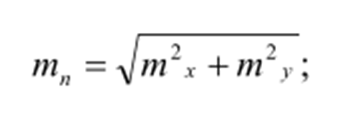
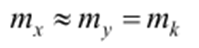
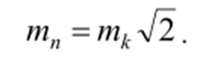
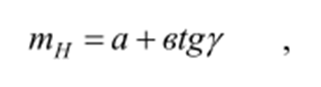
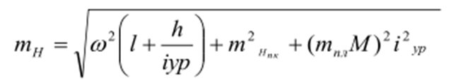
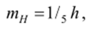

14-амалий иш Мавзу: Йирик масштабли планларнинг умумий тавсифи
Планлар турлари ва ўзига хослиги. Йирик масштабли деб, 1:500; 1:1000; 1:2000 ва 1:5000
масштабда тузилган топографик планларга айтилади. Қўлланилишига қараб “Ер, геодезия ва
кадастр” давлат қўмитаси тасарруфидаги корхоналар томонидан тузиладиган-асосий йирик
масштабли планлар ва ҳалқ хўжалигининг аниқ масаласини ечиш учун
тузиладиганмахсуслаштирилган: ер хўжалиги, ўрмон тузилиши, маркшейдерия, кадастр,
инженер-топографик йирик масштабли планларга бўлинади.
Махсуслаштирилган йирик масштабли планларнинг асосий қисмини
лойиҳалаш, қуриш ва инженерлик иншоотларидан фойдаланиш жараёнида
тузиладиган план ва профиллар ташкил этади.
Қўлланилишига қараб қидирув планлари, ижроий планлар ва кадастр планларига бўлинади.
Қидирув планлари қурилиш майдонлари ёки трассанинг энг қулай вариантларини танлаш учун;
ижроий планлар қурилиш жараёнида тузилиб, қурилаётган бинонинг лойиҳа билан мослигини
текшириш учун; кадастр планлари бино ва иншоотлардан фойдаланиш жараёнида уларнинг майдони,
ўлчамлари, ер ости коммуникациялари, юридик, эгалик ва ҳоказоларни рўйҳатга олиш учун
тузилади.
Ҳозирги даврда тузилаётган планларнинг аксарият қисми кадастр планлари бўлиб, уларда
ҳусусий ва давлат мулки, ўрмон, ер, сув ҳавзалари тасвирланади ва уларнинг таннархи ва
сифати ҳақидаги тўлиқ маълумотлар
келтирилади.
Қўлланилишига қараб қидирув планлари, ижроий планлар ва кадастр планларига бўлинади.
Қидирув планлари қурилиш майдонлари ёки трассанинг энг қулай вариантларини танлаш учун;
ижроий планлар қурилиш жараёнида тузилиб, қурилаётган бинонинг лойиҳа билан мослигини
текшириш учун; кадастр планлари бино ва иншоотлардан фойдаланиш жараёнида уларнинг майдони,
ўлчамлари, ер ости коммуникациялари, юридик, эгалик ва ҳоказоларни рўйҳатга олиш учун
тузилади.
Ҳозирги даврда тузилаётган планларнинг аксарият қисми кадастр планлари бўлиб, уларда
ҳусусий
ва давлат мулки, ўрмон, ер, сув ҳавзалари тасвирланади ва уларнинг таннархи ва сифати
ҳақидаги тўлиқ маълумотлар
келтирилади.
Йирик масштабли план олиш майдон ҳажмига боғлиқ равишда стереотопографик, тахеометрик,
мензулавий, теодолит билан план олиш ва майдонни нивелирлаш усуллари ёрдамида амалга
оширилади.
Йирик масштабли планларда план олиш усулидан қатъий назар жойнинг рельефи отметкалар
билан бирга горизонталлар орқали ифодаланади, темир ва автомабил йўллари, электр узатиш
тармоқлари, қувурўтказгичлар, каналлар, дарёлар ва бошқалар тўлиқ кўрсатилади.
План аниқлиги, батафсиллиги ва тўлиқлиги. Топографик план ва уни тузиш аниқлиги,
батафсиллиги ҳамда тафсилот ва рельефнинг тўлиқ тасвирланиши билан характерланади.
План аниқлиги деганда, тасвирланаётган нуқтанинг планли ва баландлик ҳолатининг ўрта
квадратик хатолиги тушинилади. Нуқта планли ҳолатининг ўрта квадратик хатоси қуйидаги
формула ёрдамида аниқланади:

бу ерда mҳ ва ту -планда нуқтанинг абцисса ва ординатасини ўлчаш
ўрта квадратик хатолиги.
Агарда

деб қабул қилсак,

Тажриба натижаларига биноан бу қиймат 0,3 – 0,4 мм ни ташкил этади.
План масштаби қанча йирик бўлса, унинг аниқлиги шунчалик юқори бўлади. План батафсиллиги
ундаги тасвирланган шаклларнинг жойдаги контур ва элементларга ўхшашлик даражаси билан
характерланади. План масштаби қанчалик йирик бўлса, шунчалик батафсилроқ ва кам
умумлаштирилган бўлади. Умумлаштириш даражаси планда 0,5 мм дан ошмаслиги керак.
План тўлиқлиги деганда уни тафсилот ва рельеф элементлари билан зичлик даражасига
айтилади.
План тўлиқлиги, планда тасвирланиши керак бўлган объектларнинг энг кичик ўлчами ва
масофалари билан характерланади.
Планлар масштаблари. Инженер-топографик план олиш масштаби қатор факторларга асосан
белгиланади: планда ечиладиган лойиҳавий масалалар; жой тафсилоти ва рельефнинг
мураккаблиги; ер ости ва устки
коммуникацияларининг зичлиги ва бошқалар.
Қуйидаги план масштаблари кўпроқ қўлланилади;
а) 1:10000, горизонтал кесим баландлиги 1-2 м - қурилиш майдонларининг ўрни, трасса
йўналишини танлаш, сув омборлари майдони
ва ҳажмини ҳисоблаш учун:
б) 1:5000, горизонтал кесим баландлиги 1-0,5 м- шаҳар ва саноат
комплексларининг бош планини тузиш, чизиқли иншоотларни лойиҳалаш ва
ҳоказолар;
в) 1:2000, горизонтал кесим баландлиги 0,5 – 1 м саноат, гидротехник,
транспорт иншоотларининг
техникавий
лойиҳаларини тузиш, аҳоли
пунктлари бош планини тузиш, қизил чизиқ планини тузиш учун;
г) 1:1000, горизонтал кесим баландлиги 0,5 м- ишчи чизмалар, ер ости
коммуникацияларининг
лойиҳалари ва тик текислаш лойиҳаси;
д) 1:500, горизонтал кесим баландлиги 0,5 м- шаҳар ва саноат
корхоналарининг ишчи чизмаларини, ижроий ҳужжатларни тузишда.
Планда рельефни тасвирлвш. Инженер-топографик план олишда асосий эътибор жой рельефини
тасвирлашга қаратилади. Сабаби, шунга асосан бинонинг лойиҳавий отметкалари, йўл ва
қувурўтказгичлар нишабликлари, майдонларнинг тик текислаш лойиҳаси ҳисобланади.
Назарий ҳисоблар ва тажрибалар натижаларига асосланган ҳолда планда рельефни тасвирлаш
аниқлигини баҳолаш учун қатор формулалар таклиф этилган. Булардан баъзилари қуйидаги
кўринишга эга

mH- горизонтал ёрдамида нуқта отметкасини аниқлаш ўрта квадратик
хатолиги;
Ү-жойнинг нишаблиги; а ва в- тажриба натижаларини кичик
квадратлар усулида қайта ишлашдан олинадиган биринчи ва иккинчи гурух хатоликлари.
Рельефни тасвирлаш аниқлигини баҳолашда проф. В. Большаков томонидан келтириб чиқарилган
ифодада жойнинг характери ва нишаблиги, план масштаби, рельеф кесим баландлиги таъсири тўлиқ
ҳисобга олинган:

бу ерда:
w - рельефни умумлаштириш ҳисобига юзага келадиган тасодифий таъсир қилиш хатолигининг
коэффициенти; l - пикет нуқталари орасидаги масофа; mпл - нуқта ҳолатини
аниқлашнинг ўрта
квадратик хатолигини 1 мм га тенг қабул қилинади; h-рельеф кесим баландлиги;
іур – жойнинг ўртача
кесим баландлиги; mHпк - пикет нуқталарининг отметкасини аниқлаш ўртача
квадратик хатолиги (0.05м); М- план масштаби махражи.
Кузатишларга асосан текис жойларда рельефни тасвирлаш ўрта
квадратик хатолиги:

бу ерда h-рельеф кесими.